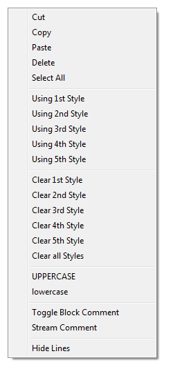

Context Menu

The
context menu can be reached by rightclicking anywhere in the edit
screen. The context menu allows for quick access to commonly used
commands and is user configurable. To change the contents of the
context menu, you have to edit the contextMenu.xml file. For this we
refer you to
NpWiki++